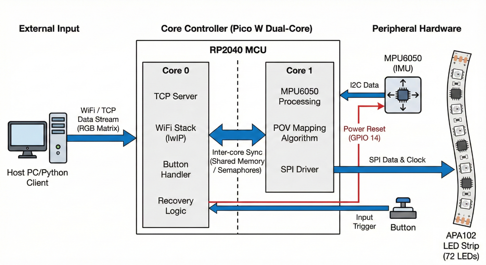
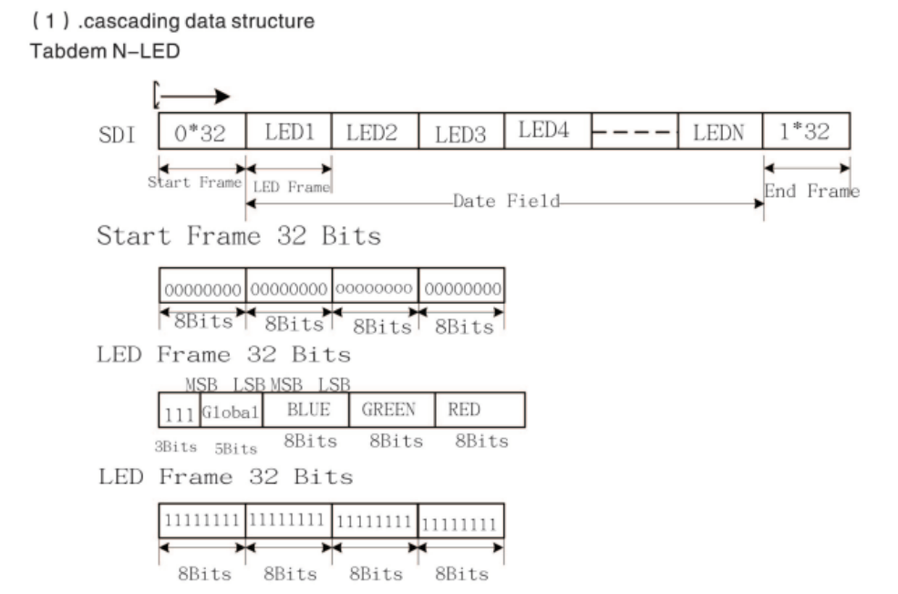
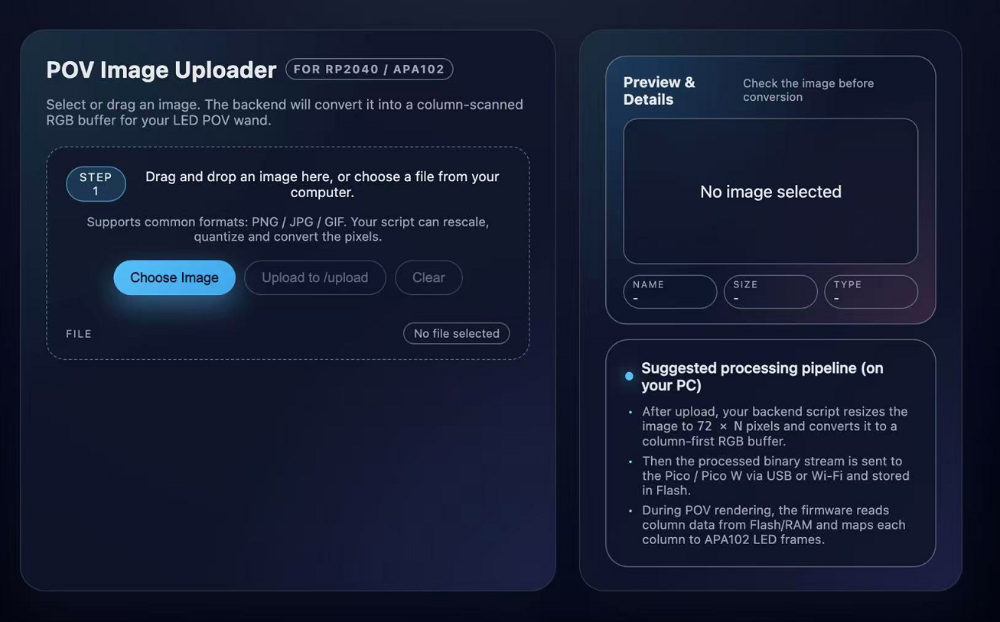
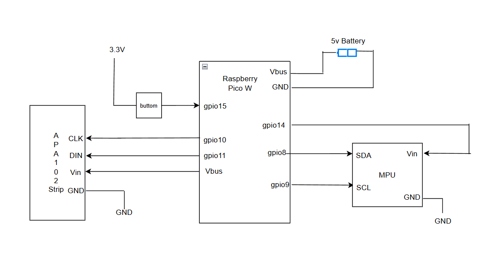
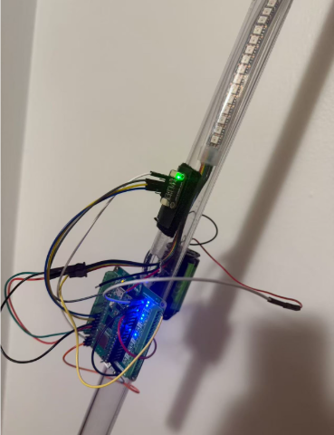
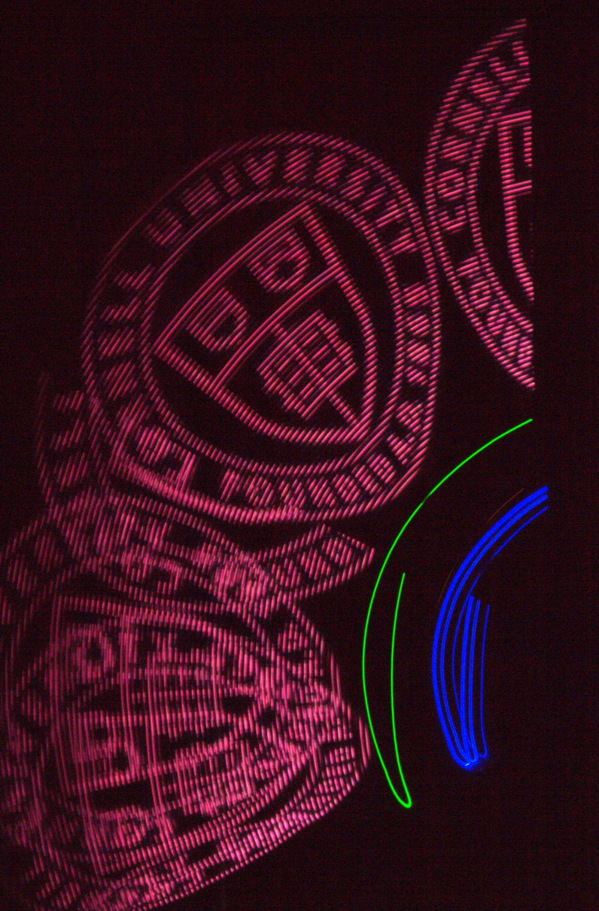
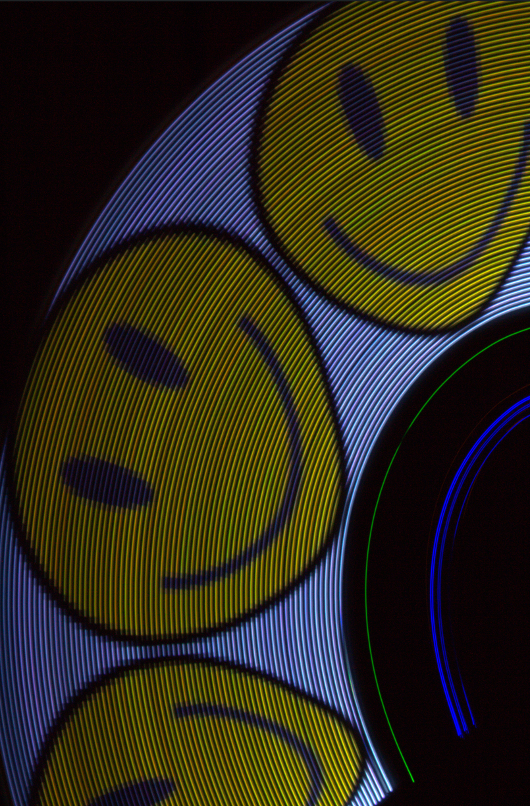
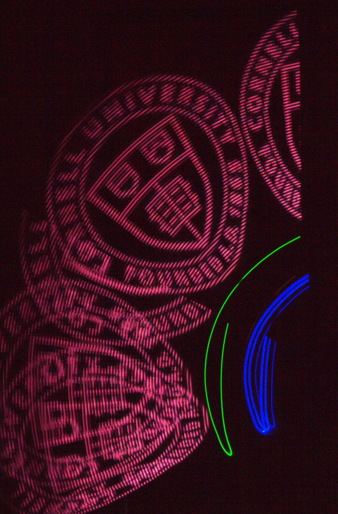
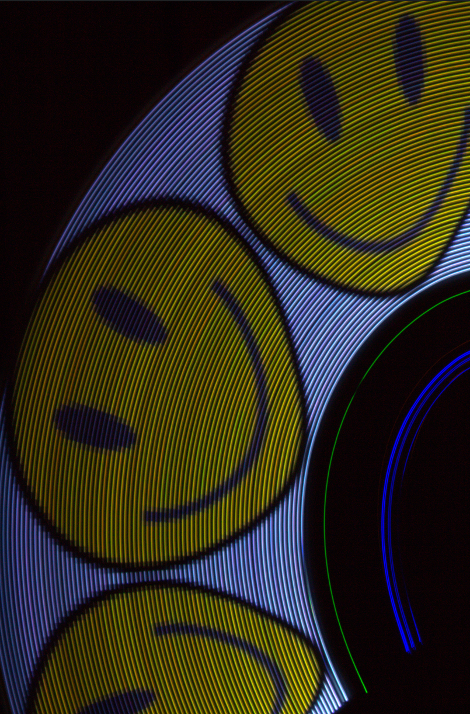

Demo
Introduction
We have designed a wireless handheld visual persistence wand based on Pico W. Its core feature lies in utilizing real-time gyroscope integration technology to achieve geometrically precise image display independent of the swinging speed. Traditional POV displays usually rely on high-speed motors to maintain a constant rotation speed. To eliminate the reliance on such mechanical constraints and achieve a portable display device, our designed system integrates the MPU6050 IMU gyroscope for integration, which can calculate the precise real-time angle of the swinging rod. Based on the physical position rather than time, this system triggers the LED updates. This mechanism eliminates the influence of user swing speed fluctuations on image stability, ensuring that as long as the swing speed exceeds the set threshold, regardless of whether the user swings fast or slow, the displayed image will not distort. Additionally, to modernize the user experience, we have integrated a Wi-Fi-based Web interface, allowing users to wirelessly upload and update images without the need for dedicated software or wired connections.
High Level Design
Rationale and Sources of Project Idea
The rationale for this project is deeply rooted in the principles of light painting photography and Persistence of Vision (POV) display technology, which utilizes the human eye's ability to retain an image for a brief duration to synthesize two-dimensional visuals from a moving light source. By rapidly moving a single column of 72 APA102 LEDs through an arc in space, the system strobes specific colors at precise spatial coordinates to render a complete image in mid-air
To ensure high versatility, the system architecture includes three predefined images stored directly in flash memory, while simultaneously integrating a WiFi module to facilitate remote image updates. Interactivity is a primary design goal, achieved through the incorporation of an MPU6050 Inertial Measurement Unit (IMU) that senses the user's swing velocity in real-time. This real-time sensor feedback allows the software to adaptively adjust the display's column refresh rate to match the physical speed of the wand, effectively preventing the image stretching or compression that typically plagues traditional fixed-timer scanning methods. Furthermore, the project leverages the robust networking capabilities of the Raspberry Pi Pico W to establish a TCP server, allowing users to upload custom RGB pixel matrices wirelessly via a dedicated protocol.
Background Math
The mathematical foundation of this project relies on real-time angular integration to map the physical movement of the wand to specific spatial coordinates for image rendering, as illustrated in Figure 1. The system estimates the relative position of the wand by integrating the Z-axis rotation rate captured by the gyroscope. The core logic defines the incremental angular change and updates the cumulative position using the following equations:
delta_angle = swing_speed * 0.001
Angle += delta_angle
Here, the constant 0.001 represents the fixed time interval between sensor samplings,
effectively serving as Δt in the integration process. Then the cumulative angle reaches a
predefined PIXEL_STEP threshold, the system triggers a transition to the next image column
index, ensuring that the image unfolds uniformly in space regardless of the user's swing speed.
Furthermore, the system performs direction sensing by evaluating the sign of the
swing_velocity. This sign determines whether the col_index is incremented or
decremented, which maintains the correct image phase and orientation during both forward and backward
strokes.
Logical Structure
The logical structure of the system, illustrated as the centerpiece of the project’s architecture in Figure 2, leverages the dual-core RP2040 microcontroller to decouple high-speed display rendering from background communication and system management. The workload is strategically partitioned between the two cores to ensure that the time-critical Persistence of Vision (POV) mapping algorithm is never interrupted by the overhead of network processing. Core 0 serves as the primary controller, managing the lwIP-based WiFi stack and a TCP server that listens for incoming RGB image matrices. In addition to networking, Core 0 executes asynchronous threads for the physical button handler to toggle image modes and a specialized recovery logic thread that monitors the MPU6050. This recovery logic is vital for system reliability, as it can trigger a hardware power reset via GPIO 14 to clear I2C bus stalls.
Core 1 is dedicated to the high-speed execution of the POV mapping algorithm and peripheral hardware driving. The logical heart of the motion sensing is the MPU6050 data acquisition, which is triggered by a hardware PWM wrap interrupt service routine (ISR). Consequently, the sampling frequency of the IMU and the subsequent update rate of the display are determined by the interrupt trigger frequency, providing the deterministic timing required for accurate angular integration. Once Core 1 processes the raw gyroscope data, it executes the POV mapping algorithm to translate the current angular position into a specific column index and pushes the corresponding color data to the APA102 LED strip through a high-speed SPI driver. The coordination between these two domains is facilitated by inter-core synchronization mechanisms, specifically through shared memory buffers for image data and semaphores to signal the completion of sensor acquisition cycles. This logical flow, as shown in Figure 2, ensures that as the TCP server on Core 0 populates the image arrays, the display engine on Core 1 can immediately render the new content with precise spatial alignment based on the wand's physical movement.
Program Details
Timing & Logic Flow
The system operates through a tightly coupled timing architecture that synchronizes sensor input, network communication, and high-speed LED output. Upon startup, the firmware initializes core peripherals including SPI for the LED strip, I2C for the IMU, and the WiFi stack for remote connectivity. The logic flow is governed by a dual-core strategy where Core 0 handles asynchronous tasks such as the TCP server and button interactions, while Core 1 manages the deterministic rendering loop. A PWM-driven interrupt service routine acts as the system heartbeat, triggering IMU sampling at a constant frequency and releasing a semaphore to wake the display thread on Core 1. This ensures that the angular integration remains accurate over time, while the background Protothreads on Core 0 concurrently update the image buffers as new data arrives via the TCP connection.
PWM Interrupt & IMU Sensing
The sensing subsystem is driven by a hardware PWM interrupt that acts as the primary clock for the POV
rendering engine. The system configures GPIO 5 to determine the PWM slice and sets a WRAPVAL of 5000
with a clock divider of 25.0 to establish a consistent sampling interval. The interrupt service routine,
on_pwm_wrap, is registered to trigger every time the PWM counter wraps, ensuring that IMU
data collection occurs at a deterministic rate. Inside this ISR, the code first clears the interrupt
flag and checks the imu_needs_reset flag to determine if the I2C bus is currently undergoing recovery.
If the system is operational, it calls mpu6050_read_raw to fetch the current acceleration and gyroscope
triplets from the sensor via the I2C0 port.
The raw Z-axis angular velocity is extracted from the gyro[2] index and, if valid, is stored in the volatile valid_gyro variable for use by the display thread on Core 1. To prevent the system from using stale or corrupted data during a communication glitch, the ISR monitors the return value of the I2C read operation; if a timeout or generic error occurs, it sets imu_needs_reset to true, signaling the recovery thread on Core 0 to power-cycle the sensor. Finally, the ISR signals the vga_semaphore using PT_SEM_SIGNAL, which unblocks the display thread to process the newly acquired motion data.
POV Column Mapping Algorithm
The POV Column Mapping Algorithm is implemented within the protothread_display thread, which serves as the primary rendering engine on Core 1. The algorithm remains idle, yielding until it receives a signal via the vga_semaphore from the PWM-based sensor interrupt. Once triggered, it converts the raw valid_gyro data from a fixed-point fix15 format to a float to calculate the current swing speed. A threshold check is applied; if the swing_speed is less than SWING_THRESHOLD (125), the led_off() function is called to clear the display and reset the motion state.
If the motion exceeds the threshold, the algorithm determines the starting orientation of the image based on the sign of the velocity; a negative velocity initializes the col_index to zero, while a positive velocity sets it to the end of the image buffer (global_width[img_index] - 1) to ensure the image is not rendered backward during the return stroke. The core mapping logic involves integrating the angular change: delta_angle is calculated as the product of swing_speed and a 0.001 time-step constant. As the accumulated angle exceeds the PIXEL_STEP (0.1), the system increments or decrements the col_index based on the swing direction and subtracts the step value from the angle counter. To maintain memory safety and support continuous rendering, the index is wrapped according to global_width[img_index], which allows the display to adapt dynamically to images of varying widths, including the real-time RGB matrices received via the TCP server.
APA102 LED Driver
The LED display system utilizes a high-speed SPI interface running at 2 MHz to drive the 72-pixel APA102 LED strip. The communication protocol follows a specific cascading data structure, as illustrated in Figure 3. Each update cycle begins with the apa102_start_frame() function, which transmits 32 zero bits to signal the start of a new data packet.
Following the start frame, the system iterates through each LED in the strip using the apa102_send_led() function. As shown in Figure 3, each LED frame consists of 32 bits: the first 3 bits are set to '1', followed by 5 bits for global brightness (defined by the BRIGHTNESS constant), and then 8 bits each for the Blue, Green, and Red color channels. The led_show() function manages this process by retrieving the appropriate RGB values from the image buffers—including the real-time TCP buffer—based on the current col_index. Finally, the transmission is concluded by apa102_end_frame(), which sends 32 bits of ones to latch the data and update the physical LEDs.
A TCP-based image transfer system is implemented to enable wireless and dynamic updates of display content for the persistence-of-vision (POV) system. On the host computer, a Python application built using the Flask framework provides a browser-based interface that allows users to upload image files. In this architecture, the host-side Python program functions as a client that initiates communication with the embedded device, while the Raspberry Pi Pico W operates as a lightweight TCP server that receives image data. This design decouples image generation and processing from the embedded system, significantly reducing computation and memory requirements on the microcontroller. When a user uploads an image, the host application temporarily stores the file and invokes an external image processing program implemented in C. This program parses the uploaded image and converts it into a display-compatible representation. During this conversion step, the image is decomposed into RGB color planes and reorganized to match the spatial layout and resolution of the LED strip. The output of the conversion is a compact binary file containing RGB plane data, optimized for efficient transmission and direct use by the embedded system. After image conversion is completed, the host application establishes a TCP connection to the Raspberry Pi Pico W over the local wireless network. The generated RGB binary file is transmitted as a continuous byte stream to the Pico W. TCP is selected as the transport protocol to ensure reliable and ordered delivery of image data, which is critical for maintaining correct pixel alignment and color consistency in the POV display. Upon receiving the complete data stream, the Pico W parses the RGB planes and updates its internal image buffers, allowing the new image to be rendered by the display subsystem. Overall, the workflow consists of user image upload on the host side, C-based image parsing and format conversion, and client-initiated TCP transmission to the Pico W server, enabling flexible and reliable wireless updates of POV display content.
TCP Server
On the embedded side, the Raspberry Pi Pico W implements a lightweight TCP-based image receiver using the lwIP network stack. This component is responsible for accepting image data transmitted from the host-side server, parsing the received data into RGB planes, and making the image available to the POV display subsystem. After connecting to the wireless network using the instructor-provided Wi-Fi initialization framework, the Pico W starts a TCP server that listens on a fixed port. The server is configured to accept a single client connection at a time, reflecting the design assumption that image updates are sent sequentially from one host device. When a client connects, the system initializes an internal receive buffer and registers callback functions to handle incoming TCP data. Incoming data is received incrementally through lwIP receive callbacks and appended to a statically allocated buffer. This design accommodates TCP packet fragmentation and ensures that the complete image payload can be reconstructed even if it arrives in multiple segments. The receiver continues collecting data until the remote host closes the TCP connection, which is used as a signal that the full image has been transmitted. Once the transmission is complete, the received byte stream is parsed according to a predefined binary format. The first portion of the data encodes the image height and width, followed by three consecutive color planes corresponding to the red, green, and blue channels. These RGB planes are unpacked and stored into separate two-dimensional arrays in memory. This memory layout matches the access pattern required by the LED rendering logic, allowing the display thread to directly index pixel values during POV operation. The parsed image width is also propagated to a shared global parameter, enabling dynamic adjustment of the displayed image dimensions. After parsing, the TCP connection is closed and the system returns to a listening state, ready to accept future image updates. The received image data remains resident in memory and can be selected as a display source alongside precompiled image patterns. By separating network reception from display timing, the system ensures that wireless communication does not interfere with real-time POV rendering.
Hardware Details
The hardware platform of this project is centered on a Raspberry Pi Pico W microcontroller, which serves as the main processing and control unit. The Pico W interfaces with an inertial measurement unit (MPU6050), an APA102 LED strip, and a user input button, forming a compact, battery-powered system for motion-controlled persistence-of-vision display. The system is powered by a battery connected to the Pico W through the VBUS and GND pins. The Pico W provides regulated power and logic-level signals to all peripheral components, with all modules sharing a common ground reference to ensure reliable operation. The MPU6050 inertial measurement unit is connected to the Pico W via an I2C interface, using GPIO8 for SDA and GPIO9 for SCL. The IMU's power is supplied through GPIO14, which is configured as a digital output. This configuration allows the microcontroller to fully power-cycle the IMU under software control, enabling robust recovery from I2C communication faults or sensor lock-up conditions through a hardware-level reset mechanism. The APA102 LED strip is driven using the SPI1 interface of the Pico W. The clock and data lines are connected to GPIO10 and GPIO11, respectively, while the LED strip is powered directly from the 5 V VBUS rail. The APA102 protocol supports high-speed data transmission and per-pixel brightness control, making it suitable for real-time POV image rendering. A push button is connected between the Pico W's 3.3 V supply and GPIO15 and is used for user interaction, such as switching between different display modes or image sources. Software debouncing is implemented to ensure reliable button detection.
MPU6050 Inertial Measurement Unit (IMU)
The MPU6050 provides three-axis accelerometer and gyroscope measurements for motion sensing. In this system, the gyroscope's Z-axis angular velocity is used to detect swing motion and determine both the direction and speed of movement. The IMU communicates with the Pico W using the I2C protocol, with the SDA and SCL lines connected to GPIO8 and GPIO9, respectively. I2C is used due to its simplicity and suitability for low-bandwidth sensor data transmission. The IMU is powered through a software-controlled GPIO pin rather than a fixed power rail. This design allows the microcontroller to fully power-cycle the sensor in the event of I2C communication failure or sensor lock-up, providing a robust hardware-level recovery mechanism. IMU data is sampled periodically using a PWM-based interrupt to ensure a stable and consistent sampling rate.
APA102 LED Strip
The APA102 LED strip serves as the primary visual output device for the system. It is controlled using the SPI protocol, with clock and data signals driven by the Pico W’s SPI interface. SPI is chosen due to its high data throughput and precise timing control, which are critical for persistence-of-vision display applications. Each LED in the APA102 strip supports independent RGB color control and a global brightness setting, allowing fine-grained control of the displayed image. During operation, image columns are transmitted sequentially to the LED strip in synchronization with detected motion, enabling the rendering of two-dimensional images through rapid one-dimensional scanning.
Battery Power Supply
The system is powered by a battery connected to the Pico W through the VBUS input. This configuration allows the system to operate as a fully standalone and portable device. The Pico W distributes power to the LED strip and peripheral components while maintaining a common ground reference. Supplying the LED strip directly from the 5 V rail ensures sufficient current for high-brightness operation, while all control signals operate at 3.3 V logic levels.
Mechanical Structure
The mechanical structure of this project is designed to support a persistence-of-vision (POV) display, where the device must be swung continuously to generate a stable virtual image. Our implementation is built as an improvement on the Lab 3 PWM-based framework: while Lab 3 mainly focused on generating periodic timing signals and driving outputs, this project introduces significant mechanical and dynamic constraints. In particular, early testing showed that when the system was mounted on a moving mechanical arm, the assembly could shift or loosen due to vibration and repeated motion, leading to unstable orientation and inconsistent visual output. Since POV requires deliberate, repeated swinging motion to achieve visual persistence, mechanical rigidity became a primary requirement, and we therefore reinforced the entire mounting system.
A rigid transparent tube is used as the main load-bearing structure. This tube acts as a backbone that provides bending and torsional stiffness during rapid swings, helping maintain a consistent geometry between the sensor and the LED output. To further improve stability, we drilled mounting holes on the tube at key locations, allowing components to be attached more securely and preventing gradual slippage over time. The APA102 LED strip is mounted along the tube's length so that its emitting surface defines the primary display plane. The MPU6050 IMU is mounted such that its XY sensing plane is parallel to the LED emitting plane, ensuring that the measured angular motion corresponds consistently to the same physical display plane. This alignment reduces orientation ambiguity and makes the swing-direction detection and pixel-stepping logic more reliable.
The Raspberry Pi Pico W is installed on a breakout board, which serves as both an electrical interface and a mechanical mounting base. The breakout board increases the contact area and provides a more rigid platform compared to mounting the Pico W directly, reducing stress on solder joints and connectors during motion. The breakout board assembly is then secured to the tube, which allows the controller, sensor wiring, and LED wiring to remain tightly constrained to the main structure. Power and signal cables are routed along the tube to minimize free-hanging wire length and reduce dynamic cable motion that could introduce additional vibration or intermittent connections.
Overall, compared to the original Lab 3 PWM setup, this project extends the design into a mechanically dynamic environment and therefore emphasizes structural reinforcement, rigid alignment between the IMU and LED plane, and robust mounting methods. These mechanical improvements directly support the core POV requirement of stable, repeatable swinging motion and result in a more consistent and visually stable display.
Result
We successfully achieved full functionality of the system. Given that the final output of the visual persistence system is designed to serve human visual perception, we used camera to take long-exposure photos for the output images by waving the wand in a dark room. Those three images are shown below:
 



Speed of execution
The system continuously monitors the speed of the swinging wand using the onboard gyroscope. The image output is activated only when the speed measured by the gyroscope exceeds a specific threshold. When the speed is below this threshold, the LED remains off to prevent the projection of distorted or incomplete partial images. The system can effectively detect speed changes and quickly activate the display logic upon reaching the target speed.
This high-speed execution is not only reflected in motion detection, but also extends to the user interactiveness. When we change the images under local and network modes respectively, no perceptible delay was observed: Under local mode, when the onboard button is pressed to cycle through the images, the display content will immediately update to the new pattern. Under network mode, when new images are uploaded using the custom web interface, the conversion is also without delay. Once the network transmission is confirmed as successful, the displayed image will instantly change from the old one to the new one. In both cases, the visual transition is very smooth, and no delay is observed between the completion of the instruction/upload and the projection change.
Accuracy
The long-exposure photography (shutter time 0.5s) serves as the primary validation for the spatial accuracy of the design. By capturing the complete trajectory of the wand, the photograph confirms that the image geometry is correctly calculated and rendered over the duration of the swing. The resulting image exhibits clear patterns, demonstrating that the system precisely coordinates the LED timing with the physical position of the wand to produce a geometrically accurate display.
This geometric accuracy starts with the system's bidirectional consistency. The system maintains correct image orientation regardless of the waving direction. Whether the wand is waved from left to right or right to left, the displayed image remains readable and is not horizontally mirrored. By analyzing the gyroscope data, the direction of motion can be detected and automatically reverses the column rendering order, ensuring the image always faces the correct way for the viewer.
In addition to directional control, the design also guarantees spatial stability under varying speeds. Regardless of the waving speed, the width of the image remains constant and is strictly aligned with the physical waving angle. It will not narrow as the speed increases, nor will it widen as the speed decreases; the aspect ratio of the image is always locked in the spatial position of the swinging stick.
Usability
Unlike traditional 360-degree POV displays that rely on fixed motors, our design prioritizes portability. By supporting the connection of portable battery power supply, we eliminated the need for bulky mechanical supports and fixed wall socket power sources. However, this handheld configuration is lacking in terms of weight. Tests indicate that the device itself has a weight which is a little strenuous and hard to maintain a single-handed wave. To achieve a waving speed greater than the threshold speed and prevent the wand from slipping, users need to perform double-handed operations. Therefore, our design is more portable than the motor-driven design, but it is most suitable for short-time demonstrations where users can hold the handle with both hands.
safety
Mechanical Integrity and Projectile Prevention: Given the high speed and significant weight of the handheld device, the main safety risk lies in components detaching due to centrifugal force, causing injuries to people. To mitigate this risk, we have implemented strict mechanical assembly standards. The battery pack and perforated board are securely fastened to the wand using reinforced fasteners, while the LED light strips are fixed inside the wand. We conducted a shake test before full-speed operation to ensure no components were loose, effectively preventing the device or its components from becoming dangerous projectiles during operation.
Photosensitivity awareness: Due to the basic working principle of the POV swinging rod involving high-frequency flashes, we became aware of the potential risks for patients with photosensitive epilepsy. Although the refresh rate is high enough to present a continuous image to the naked eye during movement, in some cases, the device actually acts as a frequency flash source. Therefore, we have implemented safety measures by recommending avoiding prolonged use near sensitive individuals and using the lowest brightness in the software configuration.
Conclusion
Our team successfully designed, assembled and verified a fully functional wireless handheld POV display wand. The verification results indicated that our design met the expected requirements. As shown in the results, as long as the waving speed exceeds the minimum visual persistence threshold, the device can generate stable and geometrically precise images without any distortion caused by changes in waving speed. The integration of the custom web interface further achieved our goal, successfully enabling wireless image upload and eliminating the need for wired data connections for the device.
However, the actual user experience also reveals the areas that need to be prioritized for improvement during the iteration process. Although the software and hardware systems operate perfectly, the mechanical weight of the device imposes a considerable physical burden during operation. If the system is redesigned, we will firstly replace the current chassis material with a lighter alternative and optimize the battery selection to reduce the overall weight without sacrificing the range. Besides, to address the need for dual-handed operation and to reduce the risk of accidental release due to fatigue, we will incorporate a dedicated safety wrist strap (harness) and redesign the handle, using a grip with higher friction that is more in line with ergonomic principles.
Appendices
Appendix A: Permissions
The group approves this report for inclusion on the course website.
The group approves the video for inclusion on the course youtube channel.
Appendix B:Source Code
See a full source code listing at our GitHub Repo.
Appendix C: Materials
Raspberry Pi Pico W
APA102 LEDs x72
MPU6050 IMU
1.2V 2000mAh Battery x4
Freenove breakout board for pico
Misc. components like tapes, cables, etc.
Appendix D:Work Distribution
Chang Liu (cl2865): tcp server, web interface, image processing
Guotao Zhang (gz284): main microcontroller logic, IMU data processing, pixel mapping
Xibo Peng (xp92): hardware design, verification